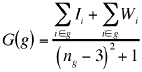

Déjà Vu (Homework Problem 2001)Karin AnderssonKeyvan Amir-Atefi |
Consider the following situation:
A group of, say, 20 students is given a homework problem once a week for each of fifteen weeks. Once a given homework problem is assigned, it is due the next day. Students are allowed to form and reform into groups as they so desire.
Each agent i possesses two exogenous attributes intelligence, Ii, and work ethic, Wi. Both attributes may take on either the value of 0 or 1.
A value 0 for intelligence implies that the student is dumb, while a value of 1 implies the student is intelligent. Similarly, for work ethic if the value is 0, then the agent is lazy. However, if the value is a 1, then the agent is hardworking state.
One quarter of the agents were of each combination of intelligence and work ethic.
Agents are permitted to work with any number of others
on the homework. However, we have set the optimal number of members for a group to three.
The grade for each member of group g is given by

where
Ii takes on either the value of 0 or 1.
Wi takes on either the values of 0 or 1.
ng is the number of members of the group.
We assume that each agent derives utility solely from his grade.
First hand knowledge and reputation:
First Hand Knowledge:
Once an agent i works with agent j , then agent i knows j's work ethic and intelligence.
Reputation:
Reputation is used in place of first hand knowledge, if agent i has not worked with agent j in the past. Agent j's reputation is calculated by average j's grade over the previous assignments. If j's average is one standard deviation above the mean j is considered to be both intelligent and hardworking. If j's average is within one standard deviation of the mean, then j is considered to be hardworking or intelligent but not both. Finally, if j's average is one standard deviation below the mean, then j is considered to be lazy and dumb.
Order of search for agent I.
Ask individuals which i knows are hardworking, and intelligent.
Ask individuals which i thinks are hardworking and intelligent based on reputation.
Ask individuals which i knows are hardworking and not intelligent, or are lazy too bright, or are lazy and intelligent.
Ask individuals who may be hardworking and not intelligent, or may be lazy and not intelligent.
Ask people who may be lazy and not intelligent.
Ask people who are lazy and not intelligent.
Agents may stop the search earlier than the last step in assumption 7, if the agent will be worse off by asking another student to join the group than by not asking the agent. The agents may stop the search earlier than the last step in assumption 7, if the agent will be worse off by asking another student to join the group than by not asking the student.
An agent may decline to be a member of a group if the agent believes that an he believes that he will be worse off by joining the asking agents group than working by himself.
Our algorithm is loosely based on the stable marriage problem algorithm, which is a simple algorithm to pair people up in the best way possible, that is to maximize their happiness. It started (of course) in the sixties, with the original goal to investigate if global coupling was possible, but is has grown into many other areas of application as well. In the paper by Caldarelli and Capocci [1] (for the reader who lacks in either attribute I or W, a popular version is given by New Scientist [2]), a desirable quality of beauty is introduced, which relates to our attributes intelligence and work ethic. Inspired by this we came up with the algorithm described below.
When forming the groups every week, an agent is randomly picked to try to form a group. When an agent searches for a group member she only searches for individuals who are not already in a group. The order of the search that the agent uses is given in assumption 7. Additionally, the agent will only pick a member if she believes that individual will improve the groups overall grade, as mentioned in assumption 8. If an agent is asked to join a group, he may decline the offer (assumption 9). The agent will decline the offer, if he believes that he is worse off by joining the group than going it alone. In the first round no information of the other agents qualities are known to any of the agents, and the groups will thus be formed without taking this into account, which is not a problem.
Once the agent has finished her search another agent is then selected to search for additional members of his or her group. This process is repeated until all lone individuals are picked into groups or until no group or individual wants to add new members to the group. Once this occurs grades are given and both private and public reputations are updated.
After running the simulation 100 times, we note that hard working students do not necessarily work together very often. This is born out by examining the average final grade of students over the 15 weeks for the run. The maximum grade a student may receive is 6 (this occurs when three hardworking and intelligent students work together). However, looking at the final grades it is easy to see that good students (agents 1 through 5) score well below the average. While, poor students do much better than scoring the amount that would be expected if they worked together (agents 16 to 20 on the chart below).
The reason that good students do not often work together is because a good student will be willing to work with a poor student if the poor student's group has fewer than three people. The reason the good student will join a bad group is because she will be better off by joining the group than going it alone. This myopic view is what generates the results.
To improve upon are work we would like to examine the effects of the following modifications to our model:
This is a very general issue, which has equivalencies in many areas where pairing occurs. Some examples might be to match medical students with residency vacancies in hospitals, supply and demand, fill job vacancies or even determine the best way to distribute battery recharging stations in a space station inhabited by roaming robots, as described by New Scientist [2].
[1] Caldarelli, G. and A. Capocci (2000): "Beauty and Distance in the Stable Marriage Problem" Europhysics Letters, Aug. 23, 2000
[2] Brooks, M. (2000): "What's love got to do with it?" New Scientist.
Page last modified July 18 2001.